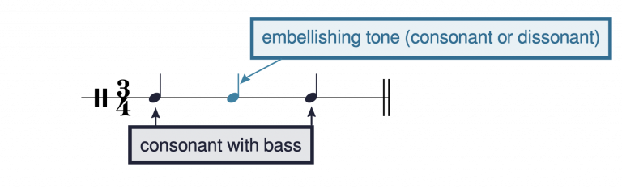

和弦音即兴与旋律动机：让独奏真正跟着和弦走
跨过“只会在音阶里找不出错的音”到“独奏本身就在勾勒和声进行”的分水岭。把琶音直接挂进 CAGED 把位，换和弦第一拍稳稳落在 3 音或 7 音上，用半音趋近、上下包围和动机发展把几个音连成有感染力的旋律。
1. 全局地图
2. 逐个概念
① 强拍落脚和弦音，弱拍用装饰音（OMT Embellishing Tones）
- 是什么
- 为什么很多人的独奏听起来“像一直在背景音阶里打转，和声换了也没感觉”？因为强拍（第 1、3 拍）随机落在了 4 级或 6 级上。只要让强拍准确落在当下和弦的 1、3、5、7 音上，你的吉他线立刻有了和声骨架。
- 为什么需要
- 非和弦音并不是不能弹，它们负责在和弦音之间搭桥：经过音（两和弦音之间的阶梯过渡）、邻音（去隔壁绕一圈回来）、倚音（强拍故意撞半音再立刻解决到和弦音）。
- 在指板上
- 练法：在五声音阶手型上，看准伴奏换到 F 和弦那一秒，强迫手指落在 F–A–C 上（尤其是三音 A）。
- 听起来
- 常见误解
- “和弦音即兴就是死板地把琶音从低音爬到高音。”琶音是地图，不是要求你按顺序 1-3-5-7 爬楼梯。只拿里面两个目标音加进五声，效果就天差地别。
② 引导线（Guide Tones）：3 音与 7 音的半音阶梯
- 是什么
- 把和弦的根音和五音留给贝斯，独奏手盯紧决定和弦灵魂的 3 音和 7 音。当和声沿着五度圈下行（如
Am7 → D7 → Gmaj7或A7 → D7），前一个和弦的 7 音往下走 1 品（半音）就是下一个和弦的 3 音！ - 为什么需要
- 看这一条只挪了两个半音的黄金声部线：Am7 的 G(♭7) → D7 的 F♯(3) → Gmaj7 的 F♯(7)；同时 Am7 的 C(♭3) → D7 的 C(♭7) → Gmaj7 的 B(3)！
- 在指板上
- 只用 2 弦和 3 弦两根弦就能弹出整段
ii–V–I的全部和声美感。 - 听起来
- 常见误解
- “必须每个和弦切换时在大跳好几个把位才能跟上。”真正的大师在同一个 4 品方寸之间，只移动 1～2 品就把三个和弦全勾勒清了。
③ 趋近音与上下包围（Approach & Enclosure）
- 是什么
- 直接死弹 3 音有点干？试试三种经典修饰目标音（假设目标是 3 弦 6 品 C♯）的做法：
1) 下方半音趋近：5 品 C 推/滑进 6 品 C♯；
2) 上方音阶音趋近：7 品 D 下行到 6 品 C♯；
3) 上下包围（Enclosure）：7 品(上) → 5 品(下半音) → 6 品 C♯(目标)！ - 为什么需要
- 下方半音滑音永远自带强烈的向心力，无论放在布鲁斯、乡村还是爵士里都极其高级。
- 在指板上
- 挑两个目标音（如 A7 的 C♯ 和 G），用“上–下–目标”的包围三连音节奏练习接入。
- 听起来
- 常见误解
- “使用半音外音需要背半音阶。”其实你只是盯着目标和弦音的左邻（−1 品）或右邻，根本不需要记整条半音阶。
④ 动机发展（Motivic Development）：像讲故事一样独奏
- 是什么
- 与其每次弹出 20 个不重复的音，不如先弹一句极其简单的 3～5 个音短动机（Motif），然后用 4 种手法把它发展成 8 小节：
1) 原样重复（让听众记住）；2) 节奏错位；3) 顺着和弦微调结尾音（比如第一遍停 I 的 3 音，第二遍伴奏变 IV 时把最后一个音改成 IV 的 3 音！）；4) 扩展问答。 - 为什么需要
- 你不需要很多新句子，只需要把一个好动机用对地方。
- 在指板上
- 听《Autumn Leaves》和《Gravity》里大师怎么把一个 4 个音的小想法反复拆解。
- 听起来
- 常见误解
- “重复同一句会显得技穷。”恰恰相反！听众记不住一连串毫无关联的 16 分音符，但会瞬间爱上“似曾相识又随和弦变色”的动机发展。
3. 交互指板与伴奏实验室
点下方预设快速切换把位与音阶/和弦；点任意一格都能发声，开启持续音即可直接对着指板练习即兴与听辨。
4. 上琴练习
- 引导线双音连接 (A7–D7)（70 BPM）：A7–D7 各 2 小节循环：前两分钟只用 3 音和 7 音，再加入下方半音趋近或上下包围。重点验证：按节拍稳定、说得出级数与音名。
- ii–V–I 琶音稳走（70 BPM 四分音符）：Am7–D7–Gmaj7 上在 5 弦根音把位只用 1-3-5-7 琶音音，不停顿跟着拍子游走。重点验证：按节拍稳定、说得出级数与音名。
- 动机 6 次变奏挑战（12 小节伴奏）：设计 1 个 2 小节短动机，在 12 小节布鲁斯上重复 6 次，每次只改一个要素（节奏、起点或结尾目标音）。重点验证：按节拍稳定、说得出级数与音名。
- 拆解大师强拍目标音（扒 2 个经典乐句）：从喜欢的独奏扒下 2 个乐句，写下每个强拍落音相对当时和弦的级数，并录一段自己的 12 小节目标音布鲁斯。重点验证：按节拍稳定、说得出级数与音名。
5. 分歧点对照
| 容易混淆的两面 | 核心区别 | 实战怎么选 |
|---|---|---|
| Chord-Scale 逐和弦换盒子 vs 公共音阶+目标音 | 大脑频繁切换指型过载 vs 一张地图瞄准不同目标点 | Dm7–G7–Cmaj7 全是 C 大调音，真正需要切换的是你瞄准的 3/7 目标音 |
| 只弹琶音爬坡 vs 五声框架+和弦音替换 | 机械听感像练习曲 vs 极有电吉他推弦味道的歌唱线 | 保持五声舒适手型，仅在换和弦瞬间替换 1～2 个落脚音是最实用的高手路径 |
6. 读原资料指南
- OMT: Embellishing Tones ↗ — 系统认识经过音、邻音、倚音、先现音等外音分类 已嵌入下方全文
- OMT: Melody and Phrasing ↗ — 理解动机、乐句结构与收束 已嵌入下方全文
- Jens Larsen YouTube ↗ — 看专业爵士吉他手如何把 3/7 引导线与包围用在 4 根弦上
📖 本地精要（免跳转直接看：Jens Larsen：现代/爵士吉他 3–7 引导线、壳和弦与目标音即兴）
- 【先弹 3 音和 7 音】和弦的根音由贝斯手负责，5 音不决定性质；吉他手伴奏用 1–3–7 壳和弦（Shell Voicing），独奏强拍瞄准 3 音和 7 音，就能只用 2～3 个音把整个 ii–V–I 交代清楚。
- 【半音包围（Enclosure）】在目标和弦音（比如第 1 拍的 3 音）到来前的第 4 拍，先弹它上方顺阶邻音 + 下方半音，再落回目标音，立刻消除“背琶音练习曲”的机械感。
修饰音（和弦外音）总览OverviewOMT · 修饰音
Overview修饰音（和弦外音）总览
Example 1 reproduces Maria Szymanowska's March no. 6, which we also saw in our discussion of strong predominants. You might have noticed that some of the notes in the bass in mm. 8–10 don't fit our harmonic analysis. These notes, which are blue and circled in Example 1, are collectively called “embellishing tones” because they embellish notes that belong to the chord. Embellishing tones can be grouped into three categories, which we describe below.在真实作品（如 Maria Szymanowska《六首进行曲之六》第 8–10 小节低音线，例 1）里，并不是旋律和贝斯的每一个音都属于当下那个和弦——图中蓝色圈出来的音叫做修饰音（Embellishing tones / 和弦外音），专门用来装点连接真正的和弦骨架音。
Example 1. Embellishing tones in Maria Szymanowska, March no. 6 from Six Marches (0:00-0:16).例 1. Szymanowska 进行曲谱例（蓝色圈标示修饰音，试听 0:00–0:16）。

In nearly all cases, an embellishing tone is the middle note of a three-note gesture in which the first and last notes are consonant with the bass (Example 2). The actual embellishing tone itself may be either consonant or dissonant with the bass. In almost all cases, however, the embellishing tone is a note that doesn't belong to the underlying chord.**全书最通俗的黄金定律**：几乎所有修饰音都夹在“三个音一组的小动作”正中间——第 1 音和第 3 音稳稳踩在和弦骨架音上，唯独夹在中间的第 2 音故意短暂制造一丁点小碰撞（不协和），随即安全落回下一个和弦音！（例 2）
Open Music Theory · 修饰音（和弦外音）（Embellishing Tones）。原文作者：John Peterson。Open Music Theory, Version 2，CC BY-SA 4.0。中文为本站翻译，以英文原文为准。图片版权：Generic_Embellishing_Tone_Layout © John Peterson is licensed under a CC BY-SA (Attribution ShareAlike) license
级进类修饰音：经过音（PT）与邻音（NT）Passing tones, neighbor tones: Embellishing tones that move by stepOMT · 修饰音
Passing tones, neighbor tones: Embellishing tones that move by step级进类修饰音：经过音（PT）与邻音（NT）
Example 1 showed the two kinds of embellishing tones that move by step: passing tones (PTs) and neighbor tones (NTs). Passing tones are approached by step and left by step in the same direction, either ascending or descending (Example 3). Neighbor tones are approached by step and left by step in the opposite direction, producing either an upper neighbor or a lower neighbor (Example 4).只靠“全音或半音级进”进出的两类常见修饰音：经过音（Passing tone, PT）与邻音（Neighbor tone, NT）。**经过音**是从和弦音级进出来、接着**同方向继续级进**走向下一个和弦音（像过独木桥填满三度空档，例 3 上行 C–D–E）；**邻音**是从和弦音级进拐出去半音/全音，接着**立刻掉头回到同一个起始和弦音**（分上邻音与下邻音，吉他即兴中的半音推敲滑音极常用！例 4）。
Example 3. Passing tones in a two-voice texture, (a) ascending and (b) descending.例 3. 二声部织体中的 (a) 上行经过音与 (b) 下行经过音。
Example 4. (a) Upper neighbor and (b) lower neighbor tones in a two-voice texture.例 4. 二声部中的 (a) 上邻音与 (b) 下邻音。
Open Music Theory · 修饰音（和弦外音）（Embellishing Tones）。原文作者：John Peterson。Open Music Theory, Version 2，CC BY-SA 4.0。中文为本站翻译，以英文原文为准。
带跳进类修饰音：倚音（APP）与逃音（ET）Appoggiaturas and escape tones: Embellishing tones that involve a leapOMT · 修饰音
Appoggiaturas and escape tones: Embellishing tones that involve a leap带跳进类修饰音：倚音（APP）与逃音（ET）
Examples 5 and 6 show the two kinds of embellishing tones that involve a leap: appoggiaturas (APPs) and escape tones (ETs). Appoggiaturas are approached by leap and left by step in the opposite direction (Example 7). The appoggiatura typically occurs on a stronger part of the beat than its surrounding notes. Escape tones are approached by step and left by leap in the opposite direction (Example 8). The escape tone typically occurs on a weaker part of the beat than its surrounding notes. It is more common for appoggiaturas and escape tones to be left by motion downward (Examples 7a and 8a) than upward (7b and 8b).带大跳的两种极富表现力修饰音（例 5、6）：倚音（Appoggiatura, APP）和逃音（Escape tone, ET）。**倚音（APP）**先经过一个“跳进”落在一个**重拍位置**的和弦外音上直接硬撞出尖锐摩擦感，然后再往**反方向温柔级进解决**进目标和弦音（例 7——吉他大师独奏在强拍上推一个非和弦音拉长然后才放回 3 音正是极品倚音！）;**逃音（ET）**正好相反，在**弱拍**先级进离开一小步，然后反方向“大跳”落去下一个新和弦音（例 8）。
Example 5. An appoggiatura in Joseph Boulogne, String Quartet no. 4, I, mm. 5–9 (0:09-0:19).例 5. Joseph Boulogne 弦乐四重奏重拍上的精彩倚音（试听 0:09–0:19）。
Example 6. An escape tone in Margaret Casson, "The Cuckoo."例 6. Margaret Casson 作品中优雅灵动的逃音。
Example 7. Appoggiaturas in a two-voice texture.例 7. 倚音模型：跳进 → 撞在强拍外音 → 反方向级进解决（多为下行解决）。
Example 8. Escape tones in a two-voice texture.例 8. 逃音模型：弱拍级进滑出 → 反方向大跳进入下一和弦音。
Open Music Theory · 修饰音（和弦外音）（Embellishing Tones）。原文作者：John Peterson。Open Music Theory, Version 2，CC BY-SA 4.0。中文为本站翻译，以英文原文为准。
爵士和弦–音阶对应基本法则（Chord-Scale Theory）Basic Chord-Scale RelationshipsOMT · 和弦-音阶对应理论
Basic Chord-Scale Relationships爵士和弦–音阶对应基本法则（Chord-Scale Theory）
Starting a major scale on each of its seven notes will yield seven different modes. Each of the modes will have a different pattern of half steps and whole steps and thus a different color. (For more information, see Introduction to Diatonic Modes and/or Diatonic Modes).把一条大调音阶分别从 7 个音起弹就得到 7 条调式——每条都对应独有的顺阶七和弦与声音颜色（详前调式各章）。
Since the ii–V–I schema is so common in jazz standards, the three chord-scale relationships in Example 2 are often taught first. Example 3 shows these three relationships within the context of a ii–V–I progression in C.因为爵士标准曲里 90% 的砖块都是 ii–V–I 进行，新手最先背熟的就是例 2 这三条黄金“一个和弦配一条音阶”对应规则（例 3 用 C 大调 ii–V–I 完整示范）：
| Chord quality和弦性质 | Mode对应调式音阶 | ExampleC 调实例 |
|---|---|---|
| minor seventh chord小七和弦 (m7) | dorian多利亚 (Dorian) | Dmi7 = D dorianDm7 = D Dorian |
| dominant seventh chord属七和弦 (7) | mixolydian混合利底亚 (Mixolydian) | G7 = G mixolydianG7 = G Mixolydian |
| major seventh chord大七和弦 (maj7) | ionian伊奥尼亚 (Ionian) | Cma7 = C ionianCma7 = C Ionian |
Example 2. Basic chord-scale relationships.例 2. 最核心三组爵士和弦-音阶配对表。
Example 3. Chord-scale relationships in a ii–V–I progression in C.例 3. C 调 ii–V–I 进行下三条音阶的五线谱对应（仔细看——它们其实全是同一批白键在不同目标和弦音上的重新排位！）。
A beginning improviser might approach a song consisting mainly of ii–V–I progressions by simply applying the dorian mode to minor seventh chords, the mixolydian mode to dominant seventh chords, and the ionian mode to major seventh chords. As Example 4 shows, an improvised melody can imply a harmony by placing chord tones on the downbeats, and a seven-note mode can be thought of as a four-note seventh chord with three passing tones (2̂, 4̂, 6̂) or extensions (ninth, eleventh, thirteenth).**新手最常掉的“机械思维误区”澄清**：虽然表面上 Dm7→G7→Cmaj7 用三张表，但这绝不是要你弹三条毫无关联的陌生音阶；更深刻地看，每条七音音阶其实就是“底层的 4 音七和弦（1-3-5-7）+ 夹缝里的三个高阶扩展经过音（9、11、13 级，即 2̂、4̂、6̂）”。只要你在强拍（1 拍、3 拍）死咬住当前和弦的那四个内音（如 Miles Davis 在经典《Tune Up》示范的，例 4），整段旋律立刻自带“不用伴奏都能听见和弦正在换”的高级爵士味！
Example 4. The basic chord-scale relationships for ii–V–I as they might be used in "Tune Up" by Miles Davis (1953).例 4. Miles Davis《Tune Up》（1953）即兴如何用强拍和弦内音勾勒出清晰的 ii–V–I 进行轨迹。
Open Music Theory · 和弦-音阶对应理论（Chord-Scale Theory）。原文作者：John Kocur。Open Music Theory, Version 2，CC BY-SA 4.0。中文为本站翻译，以英文原文为准。
旋律与乐句结构Melody and PhrasingOMT · 旋律与乐句结构
Melody and Phrasing旋律与乐句结构
Sections in pop/rock music typically consist of two, three, or four phrases. These phrases are usually organized as follows:流行与摇滚歌曲中的一个大段落（如整段主歌或副歌），内部通常由 2 个、3 个或 4 个更小的四小节短句（Phrase）拼成，典型结构图谱就这三种：
- Two-part: aa′二分结构：aa′（问句 + 微改回答句）
- Three-part: aa′b (often a 12-bar blues)三分结构：aa′b（正是 12 小节布鲁斯三句词曲公式！）
- Four-part: srdc (statement, restatement/response, departure, conclusion)四分结构：srdc（陈述 Statement – 重复呼应 Restatement – 对比起飞 Departure – 落地收官 Conclusion，非常类似古典“乐句 Sentence”）
This chapter discusses the structure of song sections such as a verse, chorus, or bridge. Each section consists of at least two phrases—in pop/rock music, a phrase is a musical unit that typically lasts for four bars and corresponds to one line of the lyrics. In labeling these structures, phrases are designated by lowercase letters.一首歌由主歌、副歌、桥段组成，而每个主/副歌内部通常就是由每行 4 小节、恰好配一句歌词的短乐句按上述结构严丝合缝搭出来的。
Open Music Theory · 旋律与乐句结构（Melody and Phrasing）。原文作者：Bryn Hughes and Megan Lavengood。Open Music Theory, Version 2，CC BY-SA 4.0。中文为本站翻译，以英文原文为准。
Jens Larsen & Goodrick：大师独奏中的 3–7 引导线与半音包围（Enclosure）Jens Larsen & Goodrick: Guide-Tone Targeting & Chromatic Enclosures in Solos吉他专题 · 双语精读 · 提炼自 Jens Larsen 爵士/现代吉他教程与目标音分析法
Jens Larsen & Goodrick: Guide-Tone Targeting & Chromatic Enclosures in SolosJens Larsen & Goodrick：大师独奏中的 3–7 引导线与半音包围（Enclosure）
When analyzing solos by David Gilmour, John Mayer, Larry Carlton, or jazz masters, over 80% of strong-beat notes (beats 1 and 3) and long bends land on the active chord's 3rd, 7th, 5th, or 9th. Scale runs only serve as bridges between these pillars.拆解 Gilmour、John Mayer、Larry Carlton 或爵士大师的经典独奏会发现：超过 80% 的强拍落音（第 1、3 拍）与长推弦终点，都精准踩在当前和弦的 3 音、7 音、5 音或 9 音上；音阶跑动只是连接这些桥墩的引桥。
To make arpeggios sound like real music instead of exercises, precede the target chord tone on beat 4 with a chromatic approach from 1 fret below or a two-note enclosure (1 scale step above + 1 half step below → target tone on beat 1).要让和弦音即兴摆脱“像在练琶音练习曲”的生硬感，秘诀是在前一拍弱拍用下方半音趋近（低 1 品滑入）或双音包围（上方邻音 + 下方半音 → 第 1 拍命中目标 3 音）。
双语精读 · 提炼自 Jens Larsen 爵士/现代吉他教程与目标音分析法。电吉他指板与名师实战双语精读（与上面嵌页的 OMT 大学乐理原文互补，涵盖指板几何、CAGED、壳和弦与大师手法）。可切换中/英与术语悬停。
⚡ 本模块其余配套课程与工具的本地精要 / 平替
- Fret Science（Keith Martin：用矩形与堆叠模型打通五声、CAGED 与和弦内音即兴） ↗
📖 本地精要（免跳转直接看：Fret Science（Keith Martin）：用“矩形与堆叠（Rectangle & Stack）”秒通全指板五声与调式）
- 【两个积木统治全指板】五声音阶在任何一根弦上只有两种品格间距：相隔 2 品的「长边（全音，含 1–2–3 或 5–6）」与相隔 3 品的「宽边（小三度，含 3–5 或 6–1）」。
- 【矩形（Rectangle）与堆叠（Stack）】两根相邻弦的长边叠在一起叫“矩形”（3×2 品格框，如大调 5-6 / 2-3），宽边叠在一起叫“堆叠”（4×2 品格框，如 6-1 / 3-5）。
- 【跨弦自动对齐】在任意单弦或双弦上只要认出当前处于“矩形”还是“堆叠”，就能不背 5 个死盒子直接斜向滑通 0～15 品（遇到 3→2 弦把上层积木往右推 1 品即可）！
- 【五声变七音调式】在“宽边（相隔 3 品的两个五声音之间）”填进 1 个中间音（4 级或 7 级），五声积木瞬间变成多利亚、混合利底亚或自然大小调。
- StichMethod Guitar（五声音阶串联与跟着和弦变化的实战即兴思路） ↗
📖 本地精要（免跳转直接看：StichMethod Guitar：五声盒子里的和弦重音与大小五声无缝混用）
- 【一盒两家】第 5～8 品同一个五声指型，重音停在 A–C–E 上是 A 小调五声，重音停在 C–E–G 上就是 C 大调五声——决定大小调的不是指型，而是你停在哪个和弦音上。
- 【布鲁斯跟随和弦（Playing the Changes）】A 调布鲁斯前 4 小节 A7 混用大小五声（C 击弦到 C♯）；第 5 小节进 D7 时，把 2 弦 8 品 G 退半音到 2 弦 7 品 F♯（D7 的 3 音），一句话点亮和弦换色。
- JustinGuitar：Intermediate Guitar Course（CAGED 全指板与即兴） ↗
📖 本地精要（免跳转直接看：JustinGuitar 中级进阶：把 CAGED 和弦音、五声与调式融为一炉）
- 【三层指板透视】在同一个把位里：第 1 层看见 CAGED 的 1–3–5 和弦骨架，第 2 层套上五声音阶的 5 个音，第 3 层补上 2 个特征音变成七音调式。
- Mick Goodrick《The Advancing Guitarist》（伯克利经典：单弦、双弦、打破指型惯性） ↗
📖 本地精要（免跳转直接看：Mick Goodrick《The Advancing Guitarist》（伯克利吉他圣经）三大练法）
- 【Unitrib（单弦练习）】规定今天只在第 3 弦（或第 2 弦）一根弦上弹完整个大调、多利亚或琶音即兴！没有了跨弦指型拐杖，你被迫真正听见音程距离并学会滑音造句。
- 【相邻双弦与限制练习】规定只在 3–2 弦第 5～9 品这 4×2 个格子里伴奏和即兴 5 分钟——限制越严格，大脑开发的音乐创意越深。
- Mark Levine《The Jazz Theory Book》（爵士与现代高阶和声圣经） ↗
📖 本地精要（免跳转直接看：Mark Levine《The Jazz Theory Book》：ii–V–I、壳和弦与调式爵士精髓）
- 【3 音与 7 音引导线】在 ii7–V7–Imaj7（如 Dm7–G7–Cmaj7）中，Dm7 的 ♭7(C) 降半音变 G7 的 3(B)，G7 的 ♭7(F) 降半音变 Cmaj7 的 3(E)——两条半音下行线撑起了整个爵士和声大厦。
- 【三全音替代（Tritone Sub）】因为 G7（B–F）和 D♭7（F–C♭/B）共享完全相同的三全音核心（3 音与 ♭7 音互换），所以 Dm7–G7–Cmaj7 可以直接改写成丝滑半音下行的 Dm7–D♭7–Cmaj7！
7. 自测 5 题
答案
C7 的 ♭7（B♭）半音下行到 F7 的 3 音（A）；C7 的 3 音（E）半音下行到 F7 的 ♭7（E♭）。
答案
下方半音模仿了“7→1 导音解决”的天然重力感，极其自然悦耳；上方半音落向大三度有时会有刺耳感。
答案
当它紧接着在下一拍级进解决到旁边的和弦音（E）时，这种“倚音”会制造迷人的情感挤压与释放。
答案
在 I7 保持小调五声，在 IV7 时只临时把 1 音或 5 音替换/加入 IV7 的三音（例如 A 布鲁斯进 D7 时加入 F♯），进 V7 时点亮 G♯ 或 B。
答案
Dm7 弹 F(2弦6品)+C(3弦5品) → G7 弹 F(2弦6品)+B(3弦4品) → Cmaj7 弹 E(2弦5品)+B(3弦4品)，每次只挪一根手指半音！
8. 在歌里听一听
- Autumn Leaves（Joseph Kosma）：Am7–D7–Gmaj7–Cmaj7–F♯m7♭5–B7–Em 引导线瀑布教科书
- Little Wing（Jimi Hendrix）：把双音装饰、邻音和击勾直接嵌入每个和弦把位
- Gravity（John Mayer）：强拍落和弦 3 音/5 音 + 极具耐心的留白动机
9. 带去原资料的 3 个问题
- 什么是“Chord-Tone Soloing（和弦音独奏）”里的 3-to-7 分解模进？
- 在极快节奏下（如 180 BPM 的 Bebop），为什么吉他手来不及想所有琶音，会退回到“双音包围+五度圈骨架”？
- 如何在同一条旋律线上同时暗示出下面的两个和弦（例如用上行琶音接下行音阶）？